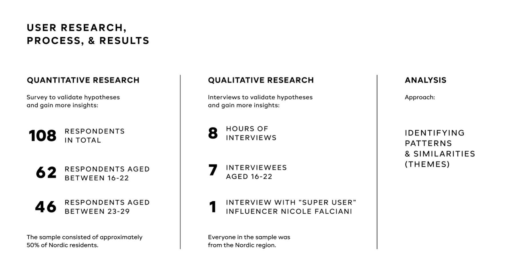
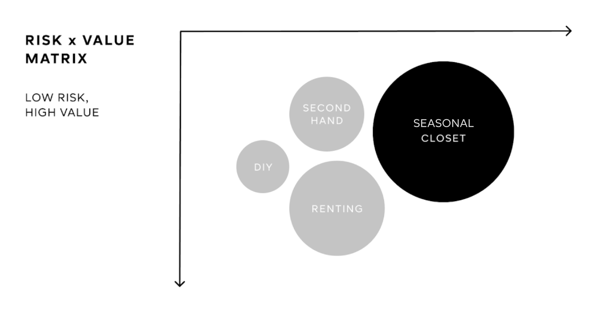

H&M Group consists of several brands. All of the H&M brands see it as a key priority to attract young female customers (age 16-22). In today's fashion industry it is very difficult for brands to go from transactional relationship with customers to true, long lasting engagement.
The usual ways for brands to try to achieve this goal of long lasting relations is by offering memberships and clubs that reward consumers with discounts. However, this might not be the only way to achieve customer loyalty. There are other ways to create emotional bonds with intended customers. That is where me and my teammates helped H&M Group!
H&M Group has given their permission to share the brief, as well as the process & final solution produced by me and my team as students at Hyper Island.

Me and my team received a brief from H&M Group during our course in Human-centered Design at Hyper Island. The challenge was to present an idea for a new digital product or service that solved identified customer needs and had the ability to create long lasting engagement with girls aged 16-22.
We spent some time in the beginning to align as a team on our goals and values for a common point of depature.
We were given 4 weeks to complete the challenge. As a team we quickly decided that we wanted to create something that were highly useful for customers, as well as something we strongly believed in as a team.
Research was conducted to better understand the target group of young girls age 16-22 and their behaviors as well as problems/pain-points. I created a survey and we sent it out to validate our hypotheses and gain more insights on the target group. We also conducted interviews to gather data on the customers. One of the respondents was a known instagram influencer interviewed to get the perspective of a 'super user'.
The method used for analysis of the result for both the survey and the interviews was identifying patterns, similarities and themes.
An overview of the research that was conducted during this project.
The resluts of the research and the main insights from both interviews and survey were clustered into different themes.
All the reserach insights were clustered and organized into themes using post-it notes.
In the next section the main recurring themes and results from the research on the different areas are presented.
When analyzing the results from the interviews and survey we found some recurring themes.
The target group generally go shopping when there is a new season, they are going to an event or party, or they need something specific. They also go shopping because they have seen someone wearing something in social media that they also would like to have.
The target group consider price to be the most important when shopping. The target group wants to shop trendy pieces to good prices. In other words; clothes should look expensive, but be cheap.
The target group gets their fashion inspiration mainly from social media, people on the street and their friends. The target group thinks that mainstream shops are not uniqe enough and that fahsion brands need to include a wider variety och people and looks.
The target group thinks that following trends is still the most important even though they are concious of sustainability. Young girls want to buy more sustainable, but often cannot afford it. Young girls do not want to compromise their wardrobe for sustainability and would rather take other actions for the planet.
The target group does to a large extent consider what they already have at home before buying new things. They are concious to make sure the new pieces matches what they already have in their closet. Young girls feel guilty when buying clothes "just because" and they also cannot afford this.
I am not great at buying sustainable clothes and I feel guilty about it
From the research insights a problem statement was formulated in relations to sustainability & purchase power. The problem statement formulated was; eventhough the target group care about sustainability, young girls still buy clothes they don't use for a long time, only because it's trendy and cheap (and they feel bad about it).
From this, several "How might we.." were generated. Finally, one "How might we.." was chosen and ideated on:
From the "How might we.." we ideated on different solutions to the problems and needs identified in the research. We used several different methods when ideating, such as "100 ideas in 1 one hour" and "crazy 8".
In total we had over 100 ideas. We evalutaed every idea on the risk x value matrix.
The matrix above shows an overview of the ideas that we evaluated to have the highest potential based on the risk x value matrix.
In the end we choose to move forward with the idea of creating a application that would help users have a better overview of their closet based on the concept of a curated closet.
Assorted is a mobile app that helpes people better visualize what they already own, organize their closet by seasons and categories, and choose new pieces in a smarter way with the help of personalized recommendaitons from H&M Divided.
When the brief was presented to us by H&M Group they wanted us to choose one brand in their brand portfolio to target. We choose to target our solution for the H&M Divided brand, since in the Divided collections there are a very broad range of clothes, which was a good fit for our solution.

The solution was the app Assorted, which was presented to H&M Group as a clickable, high-fi prototype.

To understand and empathize with our users even more we created a user flow that mapped out all the different steps of the user journey. We analyzed and divided the flow for the user into sections of investments and rewards to ensure the user would have more rewards compared to the investments they have to make. The user flow guided us in creating the screens for each step that the user could go throught in their journey within the app.

A map of the user flow - Click the image for a high-resolution version of the user flow.
We sketched out the screens of the app on paper and tested the sketches with users. After the initial user testing some changes where made. These included:

The above screens where tested with users using Invision.
We made the initial sketches of wireframes on paper in order to quickly get an idea of what the screens should look like for the best user experience. By drawing on paper we could quickly test our sketches with users and make adjustments.
The initial sketches of wireframes were made on paper .
We outlined the updated wireframes in Figma. Scroll-functions were added to the screens where such features were needed.

Outlined wireframes in Figma.
We created high-fi screens for all the steps in the user flow. We also created a small library of components in Figma to facilitate the process of designing the app.
The high-fi prototype and a simple design system was created in Figma.
Below you see the tutorial that was created to help the user better understand the service in an early stage. The welcome & tutorial pages set expectations and give instructions to the user.

A tutorial to facilitate for the user.
We created screens for several different ways of logging in to your account. You can sign in to the app with an exsisting account or you can create an account using email, your Google account or Facebook account.

The login and starting page.
The users are greeted by suggestions of four categories that they can create capsules for. These are school, casual, party and fitness. If users want to add their own categories they can click the "add another" button to add any category of their chosing.

Users are invited to choose categories for their closet.
We designed three ways for users to add items into their closets, making it as convenient as possible for the user to add clothes into their closet. The first (1) way for the users to add pieces to their closets is by taking a photo of the piece of clothing. The background of the image will automatically be removed once the photo is taken. The second (2) way of uploading a piece is for the user to upload a photo from their mobile camera. The third (3) and final way for the user to upload a piece of clothing is by pasting a link from the H&M website. In this case the image is generated from H&M's website. After the user uploaded the piece they sort it into a category, color, type and season.


Users can add piece by taking a photo
Users can add piece by uploading from their camera roll
users can add piece by adding a link from H&M
The homepage for the user is the page where they can see all the capsules that they currently have in their closet based on season and category. This is where the user ends up when they confirmed that they are done uploading pieces. It is always possible for the user to go back to the homepage wherever they are on the screen.

The users homepage.
When the user accesses one of the seasons in their closet they can see the categories they have for that season. They can also see the color palette that these clothes make up in the top of the screen. The user can see both the clothes they themselves own, pieces that are on their wishlist and suggestions to them from H&M, based on the clothes they already have in their closet. The suggestions are based on color palette, current collection and cookies.

The user can look through their different categories.
Every user have a section with suggestions of H&M pieces that would fit with what the user aready has in her closet. In this section the user can se information about the products. The user can also add pieces from suggestions into their wishlist in any season or category. The user, at this stage, also has the option to go to H&M website to shop the pieces they like.

The user gets relevant suggestions from H&M Divided.
Users can add, edit or adjust colors as they like for any closet. This also adjusts their recommendations from H&M.

Users can add or edit colors.
Users are able to share "mood boards" on social media platforms. The user selects up to 10 pieces that they want to include in their mood board. The board is created when the user presses the "create board" button. The user can share the board on platforms such as Instagram, Facebook or WhatsApp. The user also have the option to download the board they created to their cameraroll.

The user have the option to share boards in social media.
Users can create a shopping list within the app, consisting of things they want to buy. When a user marks pieces in the shopping list as bought, the piece ends up in their closet.

Users can create a shopping list in the app.
At any given moment the user can move between different screens thorugh the navigation menu at the bottom.
It is easy for the user to navigate the app using the menu.
We made several user tests throughout the process of developing our solution. In total, three user tests were conducted; first with the paper sketches, then with the first set of wireframes in Figma and lastly with the high-fi wireframes made in Figma.

This is so cool! I can see myself using this because I never remember what I have - and maybe I will stop buying only black
Jenny, 20
We made a summary of the value for H&M, the planet and the users when it comes to this solution.
Assorted will create better relationships with girls in the target group, which will result in them buying from H&M when they shop. H&M will also gather more data on their customers through the Assorted app. Lastly, H&M will get spontaneous marketing when users share their mood boards on social media.
Customers will buy smarter, which means less waste of resources. Customers will wear their pieces of clothes on more occasions (instead of only once or twice) because of the aid in matching from the app. The solution drives change in customer mindset towards sustainability.
Customers will buy more intentionally and feel less guilty, since they will be buying more sustainably and smarter. They will have a better overview of the closet they already have.
We also have features and ideas that we could see being developed with the app in the future. These ideas are:
We achieved all the deliverables from the brief. We also managed to align both our own values as a team, the clients goals and the uers needs in one solution.
All goals were aligned in the end of the project.
Fantastic work! Really good use of the design process! A+ for making it visually strong and tangible. I also like that it is solving a true customer need.
-Linda, H&M